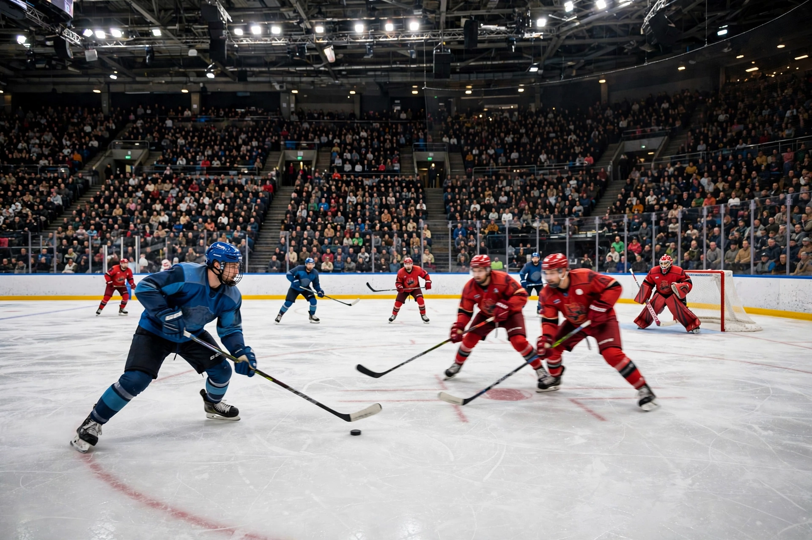

Every Sport at a Glance
| Sport | Official channels and services |
|---|---|
| American football (NFL) | CBS, Fox, NBC, ESPN, Amazon Prime Video, NFL Plus |
| Basketball (NBA) | ESPN, ABC, TNT, NBA League Pass |
| Mixed martial arts (UFC) | ESPN Plus (prelims 8 PM ET, main card 10 PM ET) |
| Soccer | Peacock, ESPN Plus, Paramount Plus, Apple TV |
| Formula 1 | ESPN, F1 TV |
| Baseball (MLB) | MLB TV, ESPN, Fox, TBS |
| Ice hockey (NHL) | ESPN Plus, TNT, NHL Network |
| Boxing | DAZN, ESPN Plus |
American Football: The Split Is the Whole Story
No sport splits its games across more places than the NFL, and that is why fans get confused. Sunday afternoon games air on CBS or Fox depending on the teams. Sunday night games air on NBC. Monday night games air on ESPN. Thursday night games stream on Amazon Prime Video. Add NFL Plus for replays and mobile viewing, and you have the full picture.
The practical rule is simple: if you know the day of the week, you usually know the channel. Sunday afternoon is CBS or Fox, Sunday night is NBC, Monday is ESPN, Thursday is Amazon.

Basketball and Hockey: League Passes Fill the Gaps
The NBA and NHL both put their biggest games on national television and the rest on their league passes. For the NBA, ESPN, ABC and TNT carry the marquee matchups, while NBA League Pass carries the rest, including out-of-market games your local channel does not show. For the NHL, ESPN Plus and TNT carry the national games, with NHL Network and local channels covering the rest.
If you follow one team all season, the league pass is usually the cheapest way to see every game. If you only watch the big games, the national channels are enough.
Soccer: It Depends on the League
Soccer is the one sport where the channel changes completely with the competition. The Premier League in the United States is on Peacock. La Liga and the Bundesliga are on ESPN Plus. The Champions League is on Paramount Plus. MLS is on Apple TV. There is no single soccer channel, so check the league first and the channel second.
Kickoff times help here too. Premier League games start on Saturday morning in the United States, while Champions League games start on Tuesday and Wednesday afternoons. If you know the competition and the day, the channel is rarely a surprise.
UFC and Boxing: Pay-Per-View Changes the Price
Most UFC Fight Nights are included with an ESPN Plus subscription. Numbered UFC events are different: the early fights are on ESPN Plus, but the main card is a separate pay-per-view purchase. Boxing works the same way on DAZN and ESPN Plus, with the biggest fights sold as pay-per-view on top of the subscription.
Formula 1 and Baseball: One Pass Covers Almost Everything
Formula 1 in the United States airs on ESPN, with F1 TV offering practice, qualifying and the race with extra timing data. Most fans watch on ESPN and only add F1 TV if they want the extra screens. Baseball is similar: MLB TV carries nearly every out-of-market game, while ESPN, Fox and TBS carry the national games of the week.
Frequently Asked Questions
Why is my game on a different channel than last week?
Because leagues rotate their games between networks by design. A team that played on CBS last Sunday can play on Fox this Sunday, and a playoff game can move to a different network entirely. The schedule for the day is the only reliable answer.
Do I need a league pass to watch one team?
Not always. If your team plays mostly on national television, the networks are enough. If it plays mostly on regional channels or out of market, a league pass such as NBA League Pass or MLB TV is the straightforward way to see every game.
Are the channels on this page the official ones?
Yes. Every channel and service listed here is an official broadcaster or streaming partner of its league. Sportsurge itself is not affiliated with any league, team or broadcaster.